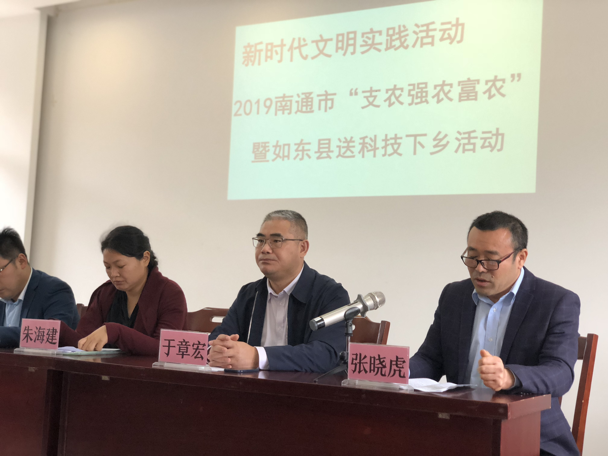

新闻动态
NEWS CENTER

2020-03-17
最美逆行者 大爱芦笋人
当武汉、当湖北成为众人避之不及的孤岛之时，中国芦笋人成为了其中一群坚定的"逆行者"。南通双羊生态农业科技有限公司总经理张晓虎和员工钱勇不顾疲惫，将芦笋香菇浓缩液送到武汉...
阅读更多


2024-05-13
芦笋的功效与作用 抗癌之王名不虚传
芦笋是一种很好的养生食材，其抗癌功效可谓是非常好的养生食材，其抗癌功效乃是家喻户晓，营养价值是非常非常的丰富。芦笋中含有丰富的抗癌元素之王—硒，能够阻止癌细胞分裂与生长...
阅读更多怎么快速提高免疫力？芦笋来帮你！抑制癌症也有奇效！
芦笋素有"蔬菜之王"的美称，《神农本草经》中将其列为"上品之上"。研究显示：芦笋富含多种氨基酸、蛋白质和维生素，其含量均高于一般水果和蔬菜...
阅读更多
2024-01-15
双羊公司芦笋深加工项目正式投产 开启产业升级新篇章
近日，双羊生态农业科技有限公司芦笋深加工项目正式投产，标志着公司成功实现从单纯的芦笋种植向"种植+深加工"的产业升级。公司拥有300多亩大棚芦笋种植基地，年产芦笋800吨。通过引进先进生产线和低温浓缩装置，实现了芦笋下脚料的高效利用...
阅读更多